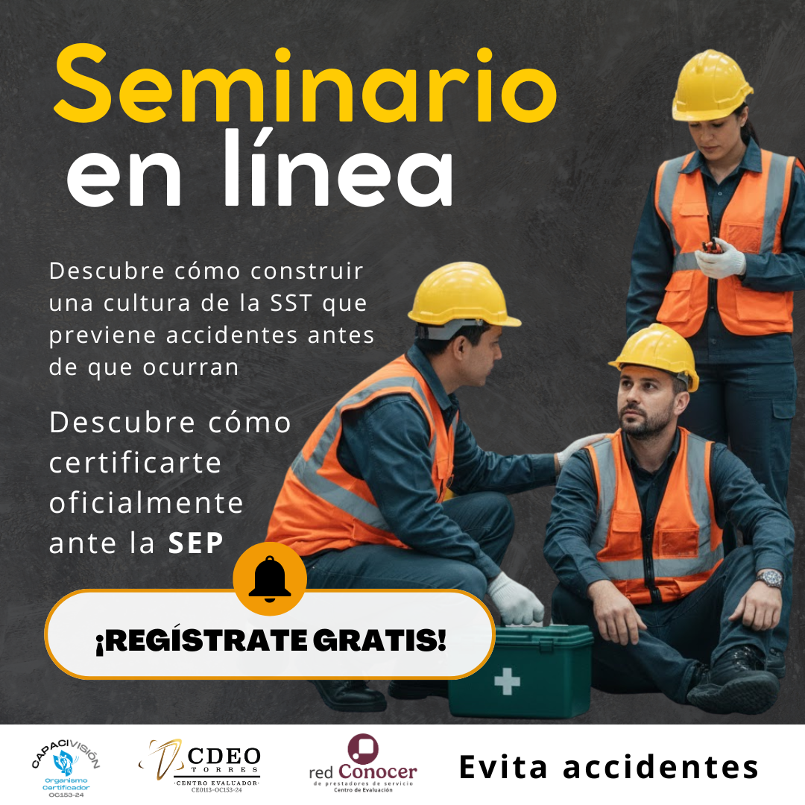
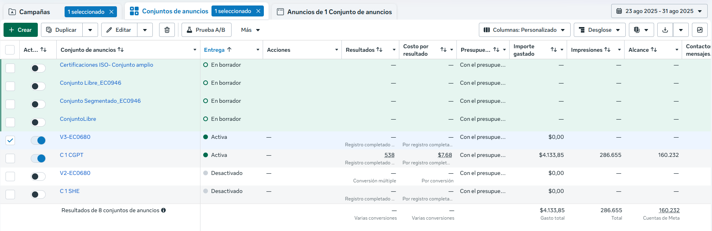
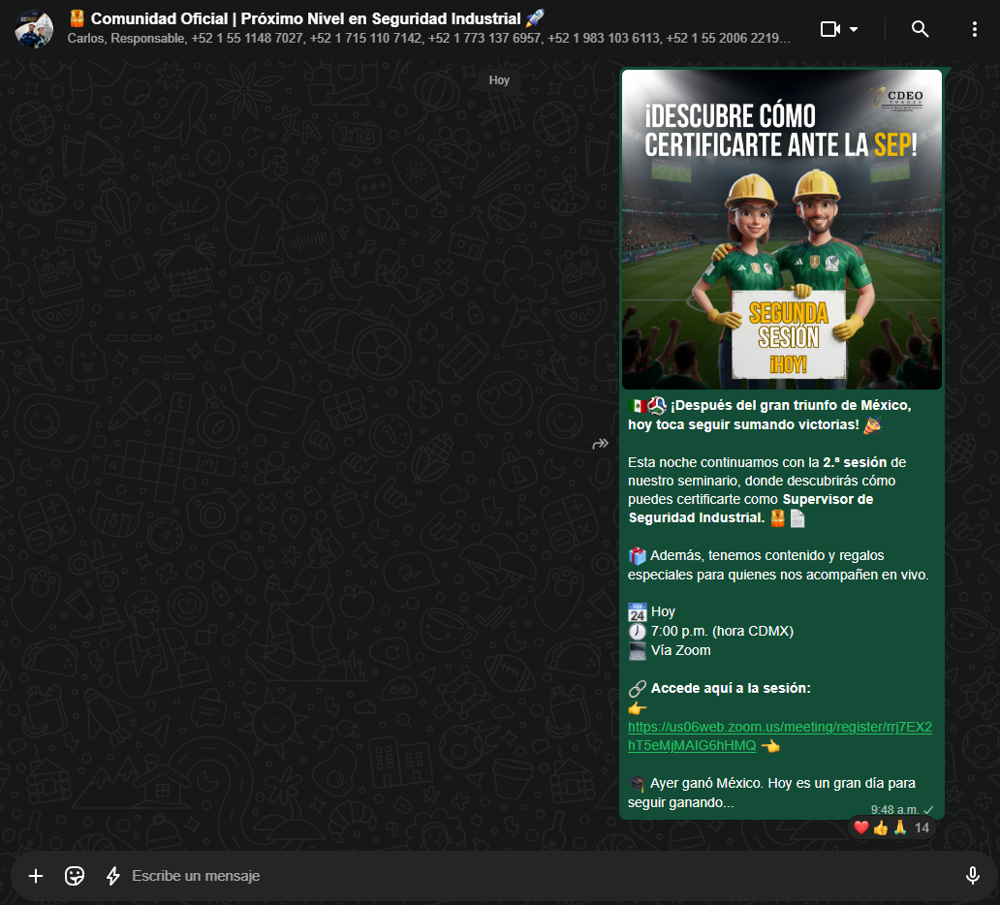
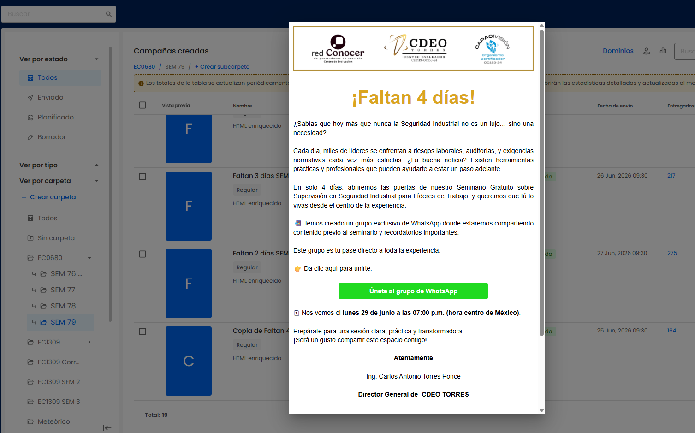
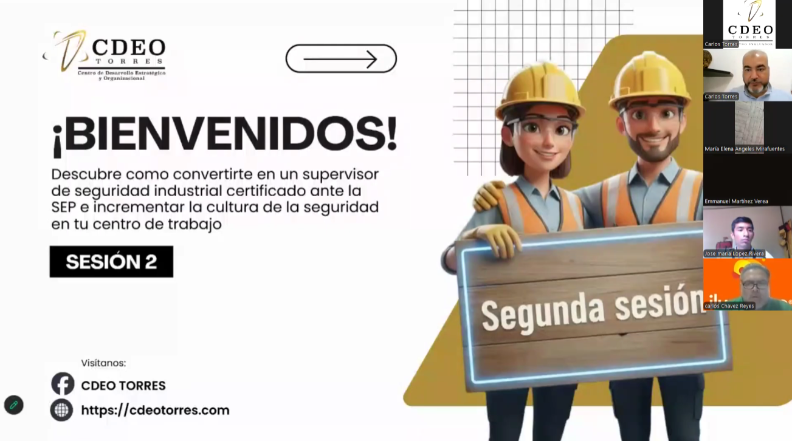
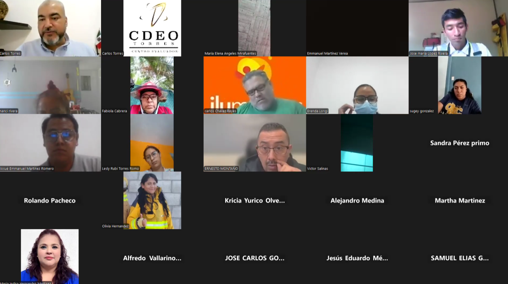

Rodrigo Salazar
Pienso el mundo.
Lo convierto en imágenes.
Publicista · Content Creator · Productor Audiovisual
Acto I
¿Quién está detrás
de estas imágenes?
Fotografía editorial
Sobre mí
Pienso antes de producir.
Soy Rodrigo Salazar, publicista y creador de contenido audiovisual. Mi trabajo combina estrategia, narrativa visual y herramientas digitales para transformar ideas en experiencias visuales.
Me interesa construir proyectos que comuniquen con intención, desde una campaña publicitaria hasta una obra audiovisual.
Publicista · Content Creator · Productor Audiovisual
Caso de estudio
CDEO Torres
Marketing · Estrategia · Contenido · Automatización
2025—2026
01
Estrategia de Captación
Estrategia de Captación
de Seminarios
Diseño de un funnel de captación para atraer prospectos interesados en procesos de certificación, utilizando Meta Ads, landings y seguimiento comercial.
Funnel de captación
Sistema de captación y conversión
Estrategia implementada en más de 10 campañas para distintos estándares de competencia.
ETAPA 01
META ADS
Objetivo
Publicidad dirigida para captar prospectos calificados hacia los seminarios.
Mi participación
- Diseñé una estrategia replicable.
- Redacté copies publicitarios.
- Gestioné campañas.
- Optimicé el rendimiento.
Evidencias del sistema

Meta Ads · Creativo 2
Meta Ads · Administrador
Nutrición · Correo
Nutrición · WhatsApp
Seminario · Zoom 1
Seminario · Zoom 2Resultados
Resultados de una implementación destacada
De las más de 10 campañas implementadas bajo este sistema, esta ejecución obtuvo uno de los mejores desempeños.
ROAS promedio de campañas similares: 2.52x
Campaña destacada: 7.25x